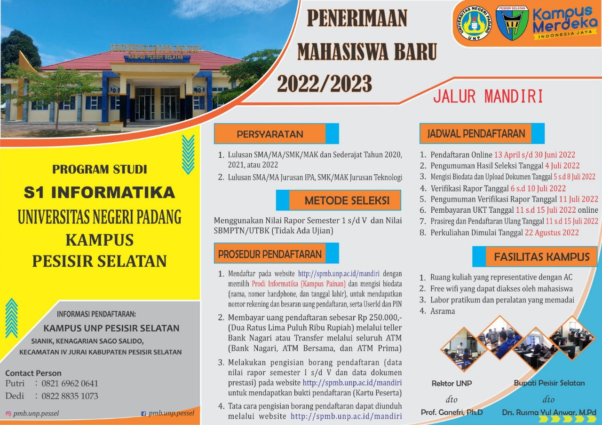
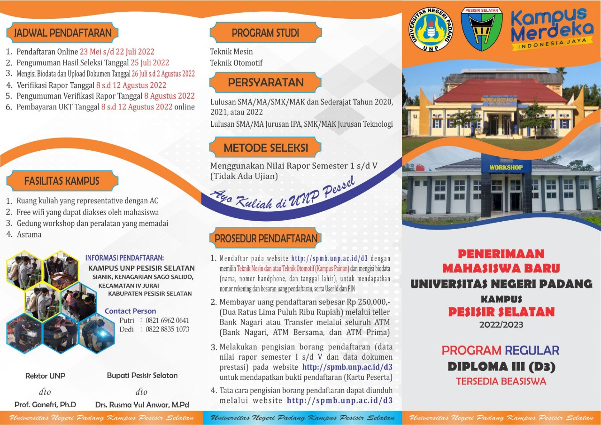

Selamat Datang di Universitas Negeri Padang Kampus Pesisir Selatan

UNP PESISIR SELATAN
Merupakan kampus pengembangan dari kampus utama UNP (Universitas Negeri Padang) yang berada di jalan Prof. Dr. Hamka, Air Tawar Padang, Sumatera Barat.

Penerimaan mahasiswa Baru 2022/2023, program studi S1 Informatika Universitas Negeri Padang ,Kampus Pesisir Selatan

Penerimaan mahasiswa Baru 2022/2023, program Reguler Diploma III(D3) Universitas Negeri Padang ,Kampus Pesisir Selatan
19 November, 2020

Dalam upaya meningkatkan mutu pendidikan dan mensukseskan program kampus merdeka, merdeka belajar Rektor UNP dan Bupati Pessel melakukan penandatanganan MoU, Kamis (24/9). Penandatanganan ini juga dihadiri oleh wakil rektor, dekan, ketua lembaga UNP,. Kepala Dinas Pendidikan dan Kebudayaan Pessel, Asisten I Muskamal, dan pejabat eselon II dan III lainnnya. Penandatanganan ini bertujuan untuk pengembangan Kampus UNP di Sago kecamatan IV Jurai Kabupaten Pesisir Selatan (Pessel).
Pada kesempatan ini Bupati Pessel, Hendrajoni menyampaikan apresiasi dan terima kasih kepada Rektor UNP yang selalu mendukung perkembangan Pessel terutama dalam pendidikan. Hendrajoni berharap semoga dengan adanya kerjasama ini UNP dapat mengembangkan jurusan-jurusan lainnya yang sejalan dengan potensi Pessel.
Sementara itu, Rektor UNP, Prof. Ganefri, Ph.D menyambut baik kerjasama antara Pessel dengan UNP. Semoga dengan adanya pengembangan kampus di Pessel, semakin membuat UNP lebih berkembang maju dan begitu juga dengan Pessel.
"Perkembangan Pessel saat ini terutama dalam bidang pariwisata, tidak menutup kemungkinan kita akan kembangkan Fakultas Pariwisata dan Perhotelan nantinya di daerah ini” Ungkap, Rektor UNP, Prof. Ganefri, Ph.D.
Dikatakan lagi bahwa prodi-prodi yang dikembangkan itu nanti, semuanya terakreditasi A. Usai penandatangani kesepakatan bersama dilanjutkan dengan peninjauan kampus di Sago.
Selain itu, Asisten I bidang pemerintahan dan Kesra, Muskamal menjelaskan, guna mendukubg pengembangan kampus UNP di Pessel, Pemkab Pessel sudah menyediakan lahan 3,2 Ha dan fasilitas gedung untuk Kampus.
Diharapkan dengan adanya kerjasama dengan UNP usaha pemerintah untuk mendirikan kampus perguruan tinggi negeri yang telah dirintis dengan mendirikan Akademi Komunitas dapat dilanjutkan bersama UNP. (Humas UNP)
Laman Terkait Universitas Negeri Padang
- ❖Official Website UNP
- ❖Portal UNP
- ❖E-learning UNP
- ❖Biro Akademik & Kemahasiswaan
- ❖SPMB UNP
- ❖Sistem Informasi Registrasi
- ❖Kurikulum UNP
- ❖Digital Library UNP
- ❖Pendaftaran Wisuda UNP
- ❖Webmail UNP